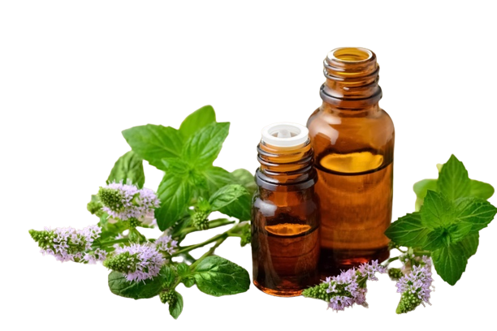

Esencias de la Tierra
Aceites Naturales
¿Qué es Esencias de la Tierra?
Nuestra empresa se preocupa por la salud y bienestar de nuestros clientes, y es por eso que nuestros productos no contienen químicos dañinos, fragancias sintéticas ni conservantes artificiales. Creemos en la belleza natural y en el poder de la naturaleza para proveernos de todo lo que necesitamos para cuidar nuestra piel.
En nuestra línea de productos encontrarás aceites, cremas, lociones y otros productos naturales que te ayudarán a mantener una piel sana, radiante y hermosa. Todos nuestros productos son amigables con el medio ambiente y son elaborados con ingredientes éticos y sustentables.
Conoce nuestros Productos
Aceites Naturales
Nuestra línea de aceites está compuesta por una selección de aceites naturales y prensados en frío que son altamente nutritivos y benéficos para la piel. Estos aceites son una fuente rica en vitaminas, minerales y antioxidantes que ayudan a proteger, hidratar y regenerar la piel.
Cada uno de nuestros aceites está formulado para un propósito específico, como hidratar la piel seca, mejorar la elasticidad, reducir la inflamación y prevenir la aparición de arrugas y líneas finas. Además, nuestros aceites tienen una textura ligera que se absorbe fácilmente en la piel, dejándola suave, tersa y con un aspecto radiante.
.png)
Cremas Naturales
Nuestra línea de cremas naturales para el cuidado de la piel está formulada con ingredientes naturales de alta calidad que nutren, hidratan y protegen la piel. Cada crema ha sido diseñada para satisfacer las necesidades específicas de diferentes tipos de piel, brindando un cuidado personalizado para cada cliente.
En nuestra línea de cremas encontrarás productos diseñados para piel seca, piel sensible, piel madura y piel grasa. Además, nuestras cremas también ayudan a reducir la apariencia de líneas finas y arrugas, promueven la elasticidad y firmeza de la piel, y mejoran la textura y el tono.
Nuestras cremas naturales para el cuidado de la piel son una forma efectiva y segura de mantener una piel saludable y hermosa. ¡Descubre nuestra línea de cremas y dale a tu piel el cuidado que se merece!
Lociones
Nuestra línea de lociones naturales está formulada con ingredientes naturales de alta calidad, como aceites esenciales y extractos de plantas, que nutren, hidratan y protegen la piel. Cada loción ha sido diseñada para satisfacer las necesidades específicas de diferentes tipos de piel, proporcionando una experiencia de cuidado suave y efectiva. ¡Prueba nuestras lociones y disfruta de una piel suave y radiante todo el día!
¿Cuáles son los beneficios de los productos naturales?
Cada vez más personas buscan productos naturales para cuidar su piel, y no es difícil entender por qué. Los productos naturales están libres de químicos dañinos que pueden irritar la piel, causar reacciones alérgicas o incluso ser perjudiciales para la salud a largo plazo.
Además, los productos naturales tienen un menor impacto ambiental que los productos convencionales, ya que no contienen ingredientes sintéticos que pueden contaminar el agua y el aire. Los ingredientes naturales son biodegradables y no dañan el medio ambiente, lo que los hace más sostenibles y saludables para el planeta.
Los productos naturales también suelen tener un proceso de producción más ético y transparente, y no se prueban en animales. Además, los ingredientes naturales suelen ser más efectivos a largo plazo para mantener la piel saludable, ya que trabajan con el cuerpo y no en su contra.
En resumen, los productos naturales son una opción más saludable y sostenible para cuidar la piel y el medio ambiente. ¡Haz una elección consciente y apuesta por productos naturales para obtener los mejores resultados para tu piel y para el planeta!
¡ Conoce a nuestro equipo de trabajo !

-
Eliel Asarael Velázquez Viramontes
CEO
-
Angel Méndez Aguilar
Jefe de desarrollo web
-
Brenda Dydiany Luna Aguirre
Fundadora y CEO
-
José Antonio Aguirre Méndez
Jefe de Marketing
-
Paloma Ruiz Luna
Jefa de Producción
-
María Luisa Aguilar Landero
Departamento de Ventas
-
Sandy Judith Camacho Diaz
Departamento de Finanzas